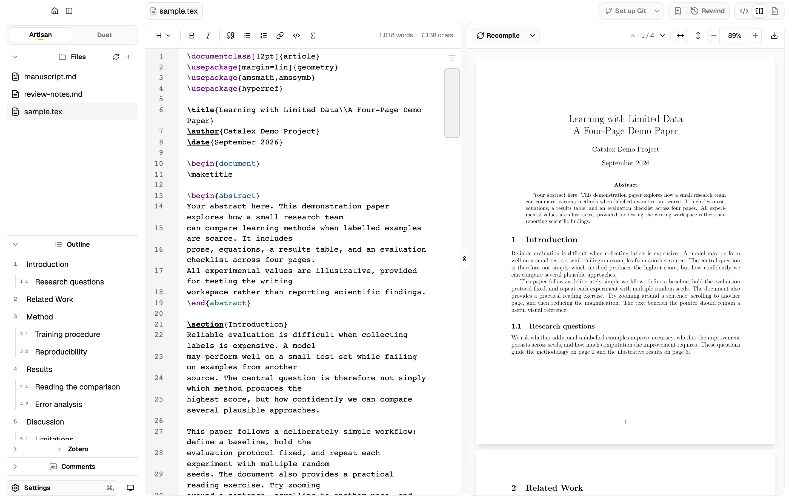
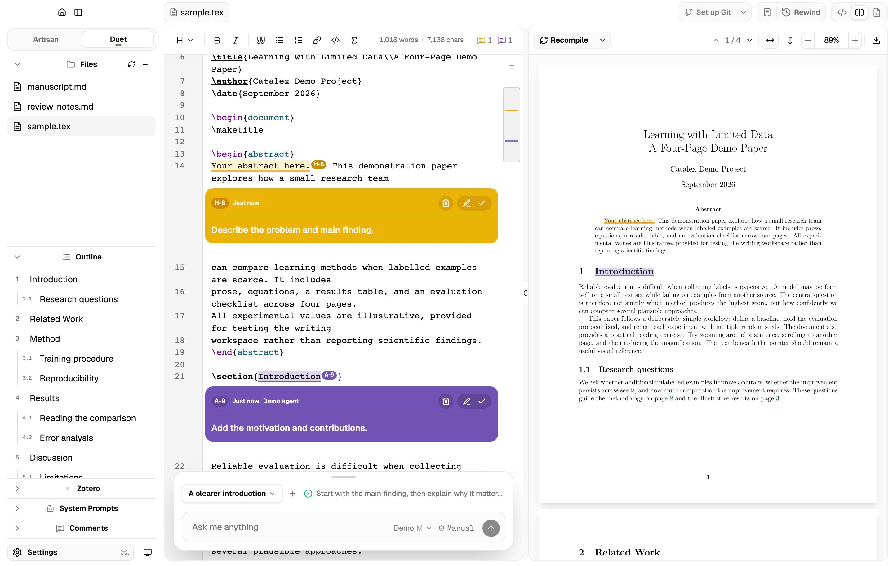
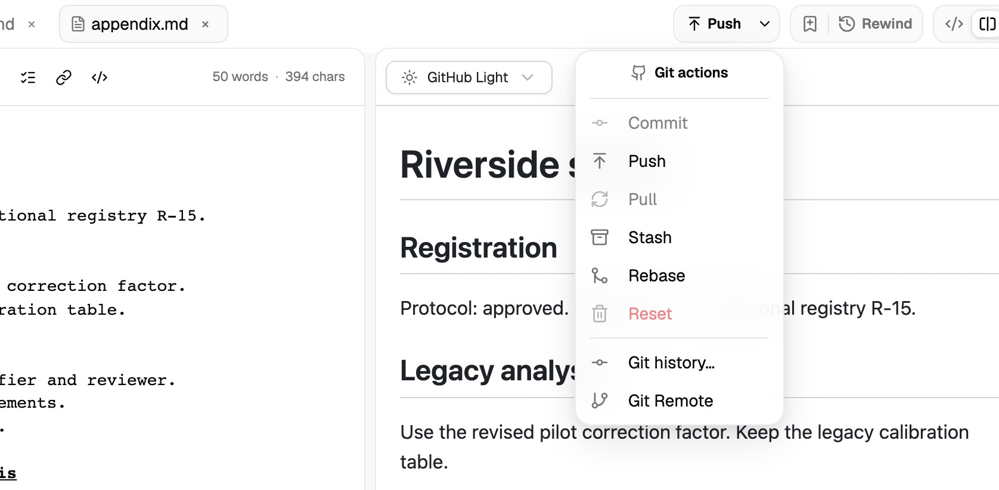
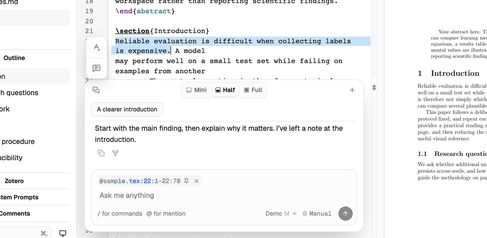
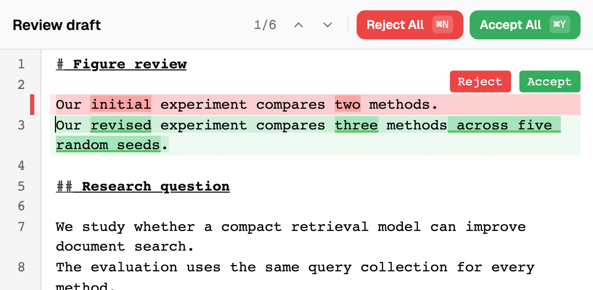
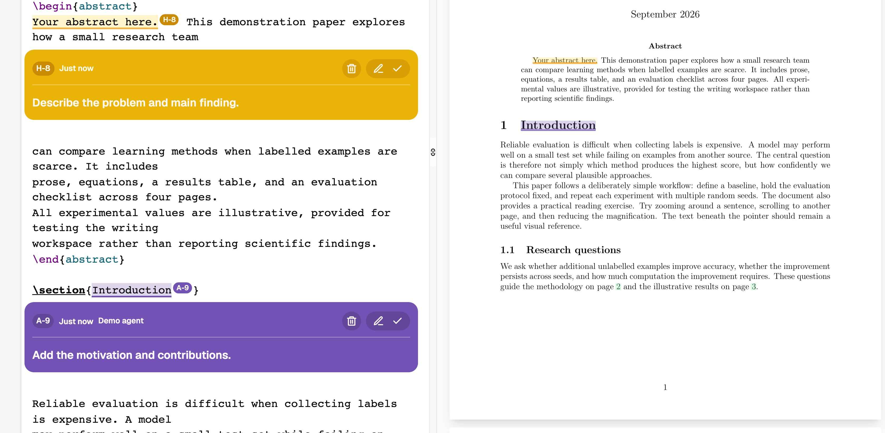
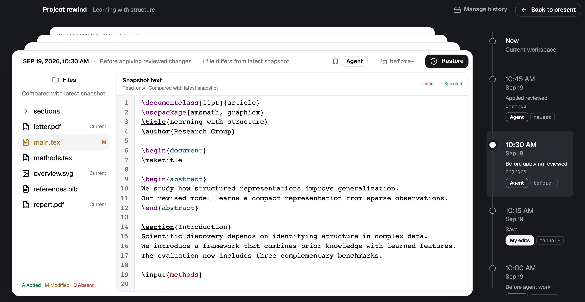

LaTeX and Markdown.
Artisan mode for focused writing. Duet mode for agent collaboration. Local-first, with MacTeX, MiKTeX, TeX Live, or Tectonic.

An open-source, local-first LaTeX workspace for academic writing.Draft, polish, and format with agent assistance, using the subscription you already have.

Artisan mode for focused writing. Duet mode for agent collaboration. Local-first, with MacTeX, MiKTeX, TeX Live, or Tectonic.

Commit, stash, and merge visually. Auto-detect your Git setup and sync with Overleaf, GitHub, or any Git remote.

Your agent can work with the whole project, your selections, and compilation errors.

Your agent works in a separate draft. When it’s ready, you accept or reject each change before it reaches your project.

Yellow for you, violet for agents, with matching PDF highlights. Built-in MCP tools and skills let agents leave review notes and resolve anyone’s comments.
* Local-only, for personal notes and agent review. Not synced to Overleaf or GitHub.

Every open project gets a private local Git history in Catalex’s storage, separate from your repository. Rewind to an earlier version—whether it was your edit or your agent’s.

Catalex brings your local agent into your writing workspace, supporting Codex and Claude Code with your existing subscription. Your skills and instructions in AGENTS.md or CLAUDE.md are supported too.
Catalex adds tools and safeguards:
Designed for computer science students and researchers writing LaTeX papers and Markdown rebuttals.
Catalex is a writing helper, not an autonomous researcher. You lead the research; your agent helps turn results into tables, draft paragraphs, or polish wording within your workflow. You remain responsible for the paper.
By letting your agent compile LaTeX and inspect the PDF, Catalex opens up possibilities beyond copying text into a chat box. It can help fit page limits, reposition figures, tighten paragraphs with short final lines, check the conference template for missing required sections, and more.
Catalex stores its history and agent drafts separately in private app storage. Your project stays free of extra hidden app files and indexes.
Catalex fits into your team’s existing workflow. Write locally with your agent, then use Git to sync with coauthors on Overleaf or GitHub.